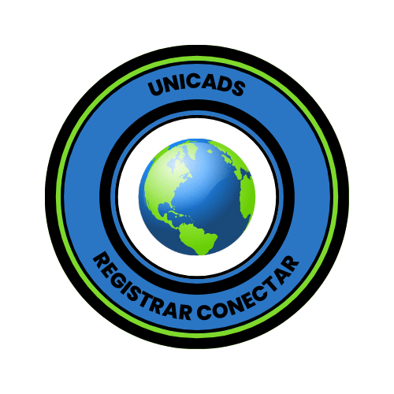

SOBRE MIM
Olá 🤗, meu nome é Luiz Filipe!
- 🔭 Estou trabalhando nos projetos UNICADS e Django
- 🌱 Estou aprendendo sobre Desenvolvimento Web, Python, etc.
- 👨💻 Todos meus projetos estão em https://github.com/LuizFilipe-091?tab=repositories
- 📫 Me contate luiz.filipe.ctt@gmail.com
UNICADS
Desenvolvi um Trabalho de Conclusão de Curso (TCC) voltado para atender a uma demanda real da indústria, especificamente para a Prefeitura de Jaraguá do Sul. O projeto consiste em um sistema de gerenciamento de pessoas com deficiência, visando melhorar a inclusão e a acessibilidade na cidade.
Django
Desenvolvi um simulador da plataforma Twitter utilizando HTML e CSS. O projeto foi uma oportunidade de aplicar conhecimentos em design de interface e estruturação de dados, proporcionando uma experiência semelhante à rede social.

MINHAS EXPERIÊNCIAS
Durante minha formação no curso técnico em Desenvolvimento de Sistemas no SESI - Rinaldo Campos Soares, em Ipatinga, tive a oportunidade de aprofundar meus conhecimentos e habilidades em diversas tecnologias essenciais para a área de TI. Um dos principais focos da minha jornada foi o desenvolvimento de projetos utilizando Django, um framework robusto para construção de aplicações web em Python. Essa experiência não apenas aprimorou minha proficiência na linguagem, mas também me proporcionou uma compreensão mais profunda das melhores práticas de desenvolvimento, como a organização de código e a implementação eficiente de funcionalidades.
Além dos projetos em Django, também me dediquei à criação de sites utilizando HTML e CSS, onde explorei o design e a estética das páginas web. Aprendi a importância da usabilidade e da experiência do usuário, aplicando conceitos teóricos em situações práticas que facilitaram meu aprendizado.
Outra parte importante do meu desenvolvimento foi o aprendizado de JavaScript, que me permitiu adicionar interatividade e dinamismo às aplicações web. Com JavaScript, pude criar funcionalidades mais complexas e responsivas, melhorando a experiência do usuário e aprimorando a performance dos projetos.
Além disso, a familiaridade com Java me forneceu uma base sólida em programação orientada a objetos, permitindo-me compreender conceitos fundamentais que são aplicáveis a diversas linguagens e frameworks. Essa diversidade de experiências em diferentes linguagens de programação enriqueceu meu conhecimento e preparou-me para enfrentar desafios variados na área de tecnologia.
Essas experiências foram fundamentais para consolidar minha paixão por desenvolvimento de sistemas. À medida que avancei no curso, percebi a relevância de unir teoria e prática, o que é crucial para a formação de um profissional completo. Estou animado para continuar minha trajetória na área de tecnologia, sempre em busca de novos aprendizados e desafios que possam expandir meu conhecimento e habilidades.